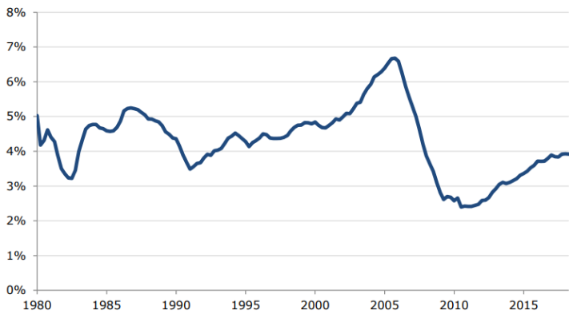
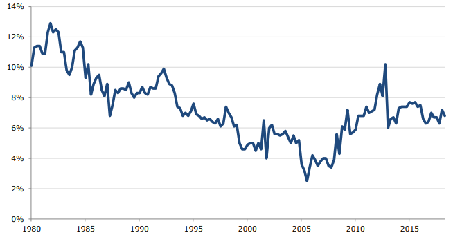

Executive Summary
It is ten years since we were at the peak of the financial crisis — the collapse of Lehman Brothers, an investment bank. This sent tremors throughout the world, and media outlets began talking about a return of the Great Depression. While the fear generated by politicians and media was able to get enough support for saving the financial industry, the country was left to deal with the painful fallout from a collapsed housing bubble. Millions lost their homes and jobs. Even a decade later, by some measures, most notably prime-age employment rates, the labor market has still not recovered.
This discussion makes several points concerning the bubble and its collapse. First and foremost, it argues that the primary story of the downturn was a collapsed housing bubble, not the financial crisis. Prior to the downturn, the housing bubble had been driving the economy, pushing residential construction to record levels as a share of GDP. The housing wealth effect also led to a consumption boom. The saving rate reached a record low. When the bubble burst, it was inevitable that these sources of demand would disappear and there were no easy options for replacing them, except very large government budget deficits.
- The decline in residential construction during the downturn was mostly just a return to trend levels of construction, along with a predictable reduction due to the overbuilding of the bubble years. Any impact of the financial crisis was very much secondary.
- The drop in consumption essentially just brought the saving rate back to its trend levels. While the saving rate did rise somewhat above trend in 2010, the gap was small relative to the correction to trend.
- It is difficult to see how the financial crisis could have had more than a marginal impact on investment in the downturn and early recovery. Non-residential investment remained close to trend through the downturn and has not become substantially higher as a share of GDP even 10 years after the downturn when the financial crisis has long passed.
- Economists have generally underestimated the severity of the recession following the collapse of the stock market bubble in 2001. Measured in terms of lost GDP, the recession was, in fact, short and mild, but measured from the standpoint of the labor market, the recession was comparable in severity to the prior three recessions, two of which (1973–74 and 1981–82) are viewed as quite severe. This confusion has contributed to the understatement of the risks posed by bursting bubbles.
- The bubble and the risks it posed should have been evident to any careful observer. We saw an unprecedented run-up in house prices with no plausible explanation in the fundamentals of the housing market. Rents largely rose in step with inflation, which was inconsistent with house prices being driven by a shortage of housing. Also, the vacancy rate was high and rising through the bubble years.
- The fact that prices were being driven in part by questionable loans was not a secret. The fact that lenders were issuing loans to people who had not previously been eligible was widely touted by the financial industry. The fact that many of these loans involved little or no down payment was also widely known.
- There are no economy-threatening bubbles on the horizon. The conditions that allowed for the 2008–09 recession and financial crisis to be so severe were easy to recognize prior to the collapse of the bubble. For a bubble to be large enough for its collapse to threaten the economy, it has to be large enough to have a major impact before its collapse. No such bubble exists today or is on the horizon.
Introduction
Ten years after the collapse of Lehman Brothers sent the economy into a full-scale free fall, there is still enormous confusion about the factors that led up to the crisis. The focus of most of the discussion has been on the financial crisis, with the housing bubble having largely fallen into the background.
This is unfortunate since the housing bubble was the main cause of the Great Recession, and also the financial crisis, which clearly made it worse. The failure of most analysts to acknowledge this fact both obscures the extent of the enormous policy failure leading up to 2008 and misdirects the focus of policy going forward.
This paper makes three main points. First, given the size of the bubble and the extent to which it was driving the economy in the years prior to the downturn, a severe recession was virtually inevitable following its collapse. Second, the bubble should have been easy to recognize for anyone who was closely monitoring the economy. For the Federal Reserve Board and top economic advisers in the Bush administration to miss the bubble required an extraordinary degree of negligence. And finally, there is no imminent crisis that is at all comparable. Dangerous bubbles like the housing bubble don’t slide by under the radar. If bubbles are big enough for their collapse to severely damage the economy, they are big enough to be seen.
The Housing Bubble Was Driving the Economy and It Would Not Be Easily Replaced
To understand the depth of the problem created bhe collapse of the housing bubble it is only necessary to understand the extent to which the demand generated by the bubble was driving the economy in the years prior to its collapse. The bubble was driving demand through two channels. First, it pushed residential construction to record levels as a share of GDP.
Figure 1 shows residential construction as a share of GDP from 1980 to 2018. For the two decades prior to the start of the run-up in house prices in the late 1990s, residential construction averaged less than 4.5 percent of GDP. At its peak in the fourth quarter of 2005, residential construction was almost 6.8 percent of GDP. This means that if construction fell just back to its normal levels after the bubble burst it would have created a demand gap of more than two percentage points of GDP.
Residential Construction as a Share of GDP, 1980–2018
But just returning to normal levels after the collapse of the bubble would have been an incredibly optimistic scenario. After all, this construction boom led to serious overbuilding in large parts of the country. The vacancy rate already reached a then-record high of 13.2 percent at the point in the third quarter of 2004, almost two years before the bubble hit its peak.
Residential construction has always fallen below trend levels in a recession. The average drop in the prior three recessions before the bubble was 1.8 percentage points of GDP. This means that if the 2008–2009 recession had just seen an average drop below the 4.5 percent longer-term trend, we would have seen a drop in residential construction of close to 4.0 percentage points of GDP due to the collapse of the bubble. Given the unprecedented degree of overbuilding as evidenced by the vacancy rate, it would have been reasonable to expect a considerably larger falloff.
As it turned out, residential construction bottomed out at 2.4 percent of GDP in 2010 and 2011, roughly two percentage points below the pre-bubble trend. This number is just over 0.7 percentage points below the 3.1 percent of GDP share for the second quarter of 2018. If we assume that the financial crisis is not still depressing construction, the trough for residential construction in the Great Recession does not seem especially low compared to the level we see in the ninth year of a recovery.
Given the amount of overbuilding during the bubble years and the pre- and post-bubble trends, it is difficult to view the lows hit in the recession as being especially out of line with the normal drops in construction expected in a recession. Surely the financial crisis did hasten the drop-off and make it somewhat more severe, but the bulk of the story can easily be explained by the bursting of the bubble.
In addition to the demand generated by the housing bubble through the construction boom, the wealth effect from the bubble led to an unprecedented consumption boom. If we compare the value of residential real estate at the peak of the bubble in 2006 to a trend where house prices had just kept pace with the overall rate of inflation, the bubble generated more than $8 trillion in housing wealth (a bit less than 60 percent of GDP). If we assume a housing wealth effect of 4-6 cents on the dollar, this implies an additional $320 to $480 billion in annual demand, an amount equal to 2.3 to 3.5 percentage points of GDP at the time.
The bubble-driven consumption story fits well with the drop in the saving rate in these years. The saving rate out of disposable income was less than 4.0 percent in 2005, 2006, and 2007. It bottomed out at just 2.5 percent in the third quarter of 2005, the lowest rate on record. The extra consumption implied by this extraordinarily low saving rate was an important boost to growth in these years.
When the bubble burst and $8 trillion of housing wealth disappeared in the span of four years, it was pretty much inevitable that saving rates would return to more normal levels. If anything, the saving rate rose less rapidly following the collapse of the bubble than might have been expected. In 2009, the saving rate was 6.1 percent of disposable income. In 2010, it was 6.6 percent of disposable income. The saving rate has averaged 7.0 percent in the first half of 2018, a period in which consumption is presumably not still depressed as a result of the financial crisis.
Savings as Share Disposable Income,
1980-2018

Furthermore, we might have expected a higher than normal saving rate in the years 2009 and 2010 since households had their disposable income increase in these years by temporary tax cuts that were included in the stimulus. If we accept the conventional view that people are more likely to save a temporary tax cut than a permanent tax cut, we should have expected higher than normal saving rates during the period the temporary tax cuts were in place.
The fact that the saving rate in the years immediately following the crash was consistent with, or even below, normal levels suggests that consumption was not being depressed to any important extent by the financial crisis. While there was considerable debate at the time about the factors that were holding back consumption, the reality is that consumption fell pretty much as would be expected following the loss of $8 trillion of housing wealth. Again, this doesn’t leave much room for the financial crisis as an explanation for the downturn.
If the financial crisis is to blame for the severity of the downturn, but it is not responsible for the falloff in residential construction or the drop in consumption, then implicitly the argument would have to be that another component of demand would have filled the gap had it not been for the financial crisis. If we rule out government spending as being politically determined, the other candidates are net exports and non-residential investment.
THE BUBBLE HAD PUSHED BOTH RESIDENTIAL CONSTRUCTION AND CONSUMPTION TO UNUSUALLY HIGH LEVELS.
There was actually a sharp reduction in the trade deficit, implying an increase in net exports, immediately following the crash. The deficit fell from 4.9 percent of GDP in the first quarter of 2007 to just 2.4 percent by the second quarter of 2009. But this was not the classic story of a falling dollar leading to a rise in exports and a reduction in imports. In fact, both imports and exports began to fall rapidly, with the decline in imports outweighing the drop in exports. Furthermore, the trade deficit started to increase again in the second half of 2009, as imports began to rise rapidly, with five straight quarters of double-digit increases.
The dollar had been falling in the years leading up the crisis. Using the Federal Reserve Board’s real broad index (the broadest measure of the real value of the dollar against other currencies), the value of the dollar had declined by 25.5 percent from its peak in February of 2002 to its trough in April of 2008. It then rose by 15.0 percent over the next 11 months, peaking in March of 2009. The dollar then quickly gave back these gains so that it was below the April 2008 level by October of 2010. It hovered near this level for the next three and a half years.
The crisis almost certainly played a role in the run-up in the dollar in the second half of 2008 and beginning of 2009. However, given how short-lived this increase was, it is difficult to believe it had too much impact on trade flows. In a no-financial-crisis counterfactual, perhaps the dollar would have continued the decline that ended in April of 2008, which would have allowed for a further reduction in the trade deficit. It’s not clear how much further the decline could have been nor how large the impact would have been on the trade deficit, but it is important to note that the lower dollar counterfactual requires not only assumptions about economics but also politics.
At the time, China and other major trading partners were quite explicitly buying up dollar-denominated assets to hold down the value of their currencies. For the dollar to have continued its earlier decline in a no-financial-crisis counterfactual, these countries would have had to refrain from buying dollar assets and allowed their currencies to rise further. It is possible that would have been the case, but without the cooperation, or at least acquiescence, of other countries in the decline of the dollar, it would not have happened. That would limit the extent to which the loss of residential construction and consumption could have been counteracted by increased net exports.
The other major GDP component that could have offset the demand lost due to the collapse of the housing bubble was non-residential investment. In fact, a cursory look at the data might lead readers to believe that non-residential investment was rising to offset the impact of the bubble’s collapse. From the third quarter of 2005, when residential construction peaked, until the second quarter of 2008, real non-residential investment rose by 17.6 percent. Its share of GDP increased by 1.1 percentage points. It looked as though this was a good candidate to fill much of the gap created by the collapse of the housing bubble, as shown in Figure 3.
Non-Residential Investment as a Share of GDP,
2002–2018
This investment mini-boom ended with the collapse of Lehman Brothers. Non-residential investment fell by a total of 15.6 percent in the three quarters after Lehman went bankrupt.
While this may seem to corroborate the financial crisis as culprit story, a slightly closer look at the data tells a very different story. The surge in investment was almost entirely due to a boom in structure investment, which rose by 32.2 percent over this two-year period, as shown in Figure 4 . The other components of investment were rising at a healthy pace, but certainly not fast enough to fill the demand that was being lost due to the collapse of the housing bubble.
Non-Residential Construction as a Share of GDP,
2002–2018
The surge in non-residential structures was, in turn, being driven by its own bubble. From February of 2003 to its peak in September of 2007, nominal prices for commercial real estate rose by 74.2 percent, according to the Green Street Advisors Index. This index did start to edge down over the next year but really began to plunge following the collapse of Lehman Brothers. It lost 31.0 percent of its value over the next seven months, as shown in Figure 5 .
The plunge following the collapse of Lehman is not a surprise. Non-residential construction is largely dependent on bank credit, and when this dried up with the financial crisis, it was inevitable that it would take a serious hit. But the financial crisis was only the proximate cause of the drop in nonresidential construction. The bursting of the bubble was inevitable in any case, the only question was the timing and specific events that set it in motion.
Real Commercial Real Estate Prices,
2002–2010
This can be demonstrated by the fact that even now, long after the effects of the financial crisis have dissipated, levels of non-residential construction are closer to the recession troughs than the pre-crisis peaks. Over the two years from the second quarter of 2016 to the second quarter of 2018 nonresidential construction averaged just less than 3.0 of GDP, this compares to a low of 2.4 percent at the end of 2010 and the start of 2011. The overbuilding in this short bubble in non-residential structures easily explains the falloff from 2009 to 2011. Again, the financial crisis surely brought on the decline in non-residential construction sooner than would have otherwise been the case and probably made it somewhat more severe, but the basic story was another burst bubble.
In this respect, it is worth pointing out that the decline in house prices was already well underway and picking up steam before the collapse of Lehman Brothers in September of 2008. Prices had peaked in the summer of 2006 and had begun to edge downward in the second half of the year. The price decline picked up steam in 2007 and into 2008, with prices falling sharply even before the collapse of Lehman as shown in Figure 6 .
Real House Price Index,
1983–2012
The national Case–Shiller index had already dropped 9.7 percent in the year from September of 2007 to September of 2008. In Los Angeles, prices had dropped 27.6 percent in the prior 12 months, in San Diego the decline was 26.4 percent. In Minneapolis, which is not usually thought of as a city especially hard hit by the bubble, prices had already dropped 14.6 percent in the year leading up to crash. Prices in Las Vegas and Phoenix were down 31.1 percent and 31.9 percent, respectively. These were enormous drops which would have led to widespread defaults whether or not we had the meltdown following Lehman.
The price decline tended to be largest in the bottom third of the market, which is where the subprime mortgages had their greatest impact. In the 12 months leading up to September of 2008, prices in the bottom tier of the Phoenix market fell by 37.2 percent. In Las Vegas, they dropped by 34.4 percent and in Los Angeles 38.5 percent. The year-over-year drop for the bottom third of the Miami market was 36.3 percent. The drop in Chicago, which also is not thought of as a bubble market, was 13.2 percent.
Movements in House Prices: National and Five Major Cities,
2006–2012
Movements in the Bottom Third of House Prices in Five Major Cities,
2006–2012
Given that many of the recent sales in these markets had down payments near zero, these price declines meant that millions of people were underwater in their mortgages even before Lehman Brothers collapsed. It is also very difficult to see any force that would have stopped or even slowed this decline, whether or not we had seen the financial panic following the bankruptcy of Lehman.
As a sidebar, it is worth noting the temporary uptick in prices that began in April of 2009. For example, in Phoenix, prices for homes in the bottom tier of the housing market rose by 26.0 percent from April of 2009 to April of 2010, they then dropped by 20.3 percent over the next 16 months. This was the result of the first-time buyer tax credit that was included as part of the stimulus package. This tax credit came with an income limit for homebuyers and had a maximum level of $8,000, so it was inevitable that it would have the greatest impact on the lower end of the market.
Since the credit was temporary, it effectively persuaded many homebuyers to move their purchases forward and buy into bubbles that had not completely deflated. Since prices did subsequently recover later in the decade, homebuyers who were able to stay in their homes may not have been especially harmed by this, but those who found themselves forced to sell ended up taking a big hit. It is worth noting that sales induced either directly or indirectly by the credit (it supported the housing market for the year it was in place) often replaced privately held mortgages, such as those in private issue mortgage-backed securities, with mortgages insured through Fannie Mae, Freddie Mac, or the Federal Housing Authority. This was an effective way to assist the financial industry, even if it was not necessarily a very helpful policy for homeowners.
Reassessing the Stock Bubble Recession of 2001
One factor that may lead people to dismiss the importance of the collapse of the housing bubble is a misunderstanding of the severity of the downturn following the collapse of the stock bubble in 2001. The conventional view of this recession is that it was short and mild.
In GDP terms, this is clearly true. There was actually just one quarter of negative growth, the third quarter of 2001. The economy grew modestly in the fourth quarter of the year and by the first quarter of 2002, it has already surpassed its prerecession peak.
But the labor market picture looks very different. While the recession is dated as ending in December of 2001, the economy continued to lose jobs in 2002 and through most of 2003. It didn’t regain the jobs lost in the downturn until January of 2005, making it at the time the longest period without net job creation since the Great Depression.
This weak job growth shows up clearly in the data on employment rates. While the unemployment rate peaked at a relatively low 6.3 percent in June of 2003, the employment-to-population ratio (EPOP) dropped by 2.7 percentage points from its peak in April of 2000 to its trough in September of 2003. Furthermore, it never came close to recovering to its prerecession level.
Since EPOPs are complicated by demographic changes in the population, it can be helpful to focus on prime-age (ages 25 to 54) men. There has been a modest downward trend in the EPOPs for primeage men throughout the post-World War II period, which must be kept in mind when assessing the impact of a recession. Figure 9 shows the trend in EPOPs for prime-age men following the 2001 recession and the prior three recessions.
Changes in Prime-Age Male Employment Rates in the Last Four Recessions Before the Great Recession
As can be seen, by this measure the 2001 recession does not look especially mild. Three years after the start of the recession in March of 2001, the EPOP for prime-age men was still more than three full percentage points below its prerecession peak. This is comparable to the recession that began in June of 1990 but worse than the severe recession that began in June of 1981. Three years after the beginning of that downturn, the prime-age EPOP was only down by 2.5 percentage points. The falloff following the recession that began in November 1973, also a severe downturn, was comparable after the three-year mark. Using employment rates as the measure of the severity of the downturn, the 2001 recession looks like a severe downturn rather than a short and mild slowing of growth.
This drop in EPOPs is often dismissed as being the result of technological change that made many male workers unsuited for the labor market. The argument is that computer technology and automation displaced less-educated male workers.
A problem with this argument is that EPOPs also dropped for prime-age women. They also dropped for prime-age men with college degrees. The median real hourly wage for prime-age men with college degrees also fell in this period. If skills-biased technological change (the argument that technology reduced the demand for workers with less education) was hurting workers with less education then presumably it would have been benefiting those with more education, but that does not appear to have been the case.
It is also worth noting that the drop in prime-age male employment appears to be unique to the United States. Figure 10 shows the trend in working-age male EPOPs in the United States, the United Kingdom, Canada, Australia, and the Netherlands between 2000 and 2006 (working age is 15 to 64 years old). The UK, Canada, and Australia are included as countries with economies and cultures that are most similar to the United States.
Comparative Trends In Working-Age Male Employment Rates Following the 2001 Recession
The United States stands out in this period as the only country with a substantial sustained decline in working-age male EPOPs. If this drop is supposed to be due to technology, rather than a lack of demand due to the collapse of the stock bubble, it is somewhat peculiar that these other countries don’t appear to have been affected in the same way by this technology shock.
If we consider the EPOP yardstick to be the appropriate measure of the severity of the downturn, then it appears the US economy had a difficult time recovering from the collapse of the stock bubble. The run-up in stock prices led to a major investment boom, with investment hitting its highest shares of GDP since the end of the 1970s and beginning of the 1980s. This investment demand quickly disappeared when the bubble burst. In the same vein, the stock wealth effect led to a consumption boom, with the saving rate falling to then-record lows of less than 5.0 percent of disposable income. This demand was not easy to replace, especially when the trade deficit was rising rapidly due to an overvalued dollar and China’s admission into the World Trade Organization.
If we view the fallout from the collapse of the stock bubble as being a severe recession, rather than a minor blip, it should not be surprising that we saw a much more serious downturn following the collapse of a bubble that was having a considerably larger effect on the economy. Since the conventional view in the economics profession at the time was that the collapse of a bubble can be easily dealt with, it is not surprising that there was little concern as the housing bubble grew to ever more dangerous proportions.
The Bubble Was Easy to See
It is common to speak about the collapse of the housing bubble and the financial crisis as unpredictable events that fell out of the sky without warning. While this may be a comforting view for the economists with jobs that required monitoring the economy, it is far from the reality. The housing bubble and the risks it posed were easy to see. It was only due to incredibly narrow-minded thinking that the vast majority of the economics profession managed to miss it.
At the most basic level, we saw an unprecedented run-up in house prices. In the years after World War II, house prices had largely moved in step with the overall rate of inflation. Suddenly in the late 1990s sale prices began to substantially outpace inflation, as shown in Figure 11.
Real House Price Index, 1983–2012
This gap picked up after the recession in 2001. With the Fed pushing interest rates down to what was at the time historically low levels, neither construction nor price growth took a serious hit in the recession or immediate aftermath.
By the spring of 2002, Federal Reserve Board Chair Alan Greenspan felt the run-up in house prices was so striking that he commented on it at length in Congressional testimony. It is worth noting that none of his explanations came close to holding water as I argued at the time.
Greenspan attributed the run-up in house prices to four factors:
- Income growth;
- Population growth;
- Environmental restrictions on building; and
- Limits on buildable land.
Each of these arguments could be easily dismissed with just a cursory examination of the data and recent history. Income growth had been healthy in the late 1990s, but not extraordinary when compared to the 1947 to 1973 “Golden Age.” That period led to no increase in house prices in excess of inflation. Furthermore, by 2002, the economy had been hit with a recession and real incomes had pretty much stopped growing.
The population growth story was especially weak. As everyone familiar with policy debates in Washington at the time was well aware (privatizing Social Security was a top item on the agenda), the major demographic phenomenon for the United States in that and future decades was the aging of the baby boomers. By 2002, baby boomers had largely moved through their years of household formation and were in the process of downsizing and preparing for retirement. While Greenspan cited immigration as a factor driving up housing demand, this effect would have been dwarfed by the impact of the aging of the native-born population.
The argument about environmental restrictions implied that these were somehow more binding in the late 1990s and early 2000s than in prior decades. Given the Republican takeover of Congress and also major state houses in places like New York and California, it was hard to argue that the period was a boom time for the environmental movement.
The last point is clearly true in a limited sense. Highly desirable places to live like New York and San Francisco have a limited supply of land, and unless they sharply relax building restrictions, there will be a limit to the supply of housing available to accommodate an ever-growing number of inhabitants. But there are three simple problems with this argument.
First, the run-up in house prices wasn’t just occurring in places like New York and San Francisco, it was also taking places in cities like Las Vegas and Chicago which didn’t face the same sort of limits on land. The second problem is that the limits on buildable land did not just appear in the late 1990s. We should have been seeing rises in prices for many decades in the past insofar as these limits were a big factor in house prices.
Finally, and most importantly, there was no remotely comparable run-up in rents. If we really were seeing a severe shortage in housing driving up prices, then we should expect to see a comparable increase in rents. As it was, rents were only slightly outpacing the overall rate of inflation in the bubble years.
Real House Price and Rent Indices, 1983–2012
Greenspan’s testimony should have served as a wake-up call to anyone who had not already been paying attention to the surge in house prices. At the time, Greenspan was by the far the most widely known economist in the world. He had been appointed as Fed chair by four different presidents. He was the subject of a fawning biography by Bob Woodward, appropriately titled “Maestro.” The business press largely revered him.
Yet, in spite of Greenspan calling attention to the run-up in house prices, and providing no remotely plausible explanation based in the fundamentals of the housing market, the topic received virtually no attention from economists or the business press. In fact, Greenspan continued to focus on the extent to which higher house prices were driving the economy in a series of papers with Fed economist James Kennedy that examined the extent to which homeowners were using cash out financing to support their consumption.
Homeowners’ Equity as a Percent of Home Value, 1980–2012
There was one other factor that should have provided clear evidence that the run-up in house prices was a bubble and not driven by the fundamentals of the housing market. The vacancy rate was unusually high in the bubble years, actually rising towards the end of the period.
Vacancy Rates, All Housing Units, 1980–2018
GREENSPAN WAS BY THE FAR THE MOST WIDELY KNOWN ECONOMIST IN THE WORLD.
In short, the evidence that the unprecedented run-up in house prices during this period was not being driven by the fundamentals of the market was there for anyone to see who cared. It required no deep sophisticated analysis of the market. It was also evident in the monthly data on housing starts and consumption that the bubble was driving the economy. It should have been evident to anyone that if the market went into reverse it would seriously damage the economy.
The fact that the housing market was driven by questionable loans was also not a secret. The subprime market was big business. The investment banks were proud to tout the growth of their issuance of mortgage-backed securities based largely on mortgages given to moderate-income people. In fact, their issuance had largely displaced the Federal Housing Authority (FHA), which saw its market share shrink from around 8 to 9 percent in more normal times to just 3.0 percent in 2006 at the peak of the bubble. Some conservatives actually argued for eliminating the FHA, claiming that Wall Street’s sophisticated ability to manage risk had made it obsolete.
There was also widely available data showing the poor quality of these loans. The National Realtors Association released an analysis at the start of 2006 showing that 43 percent of first-time homebuyers in 2005 had down payments of zero or less. (Some homebuyers borrowed money to cover closing or moving costs, in addition to the full price of the house.) The Federal Bureau of Investigation warned of an epidemic of mortgage fraud as early as 2004, with most of the crimes done by the sellers.
There were also widespread jokes among people in the industry at the time about “liar” loans or “NINJA” loans. NINJA was short for “no income, no job, and no assets.” It was very clear to anyone paying attention that banks and other mortgage issuers wanted to make loans with little concern for whether the buyer would be able to meet their payments. They could sell any loan in the secondary markets to the Wall Street investment banks, who would then package them in mortgage-backed securities. These would be blessed with investment-grade ratings by the credit rating agencies and then sold all over the world.
It is difficult to understand how anyone who followed the economy closely at the time could not have seen what was happening in front of their face. Nonetheless, Alan Greenspan still tried to plead ignorance with a straight face.
A Washington Post piece on the collapsing bubble written in the summer of 2008, included this account of an interview with Greenspan:
“Greenspan puzzled over one piece of data a Fed employee showed him in his final weeks. A trade publication reported that subprime mortgages had ballooned to 20 percent of all loans, triple the level of a few years earlier. “‘I looked at the numbers . . . and said, “Where did they get these numbers from?”’ Greenspan recalled in a recent interview. He was skeptical that such loans had grown in a short period ‘to such gargantuan proportions.’ “Greenspan said he did not recall whether he mentioned the dramatic growth in subprime loans to his successor, Ben S. Bernanke.”
This account is sufficiently incredible that it is difficult to say whether it would be worse if Greenspan was lying or telling the truth. Greenspan is claiming that he first became aware of the extent of the subprime market in January of 2006, as the bubble was approaching its peak. This is someone who prides himself on following data closely and had been fascinated by the amount of equity homeowners were withdrawing to finance their consumption.
Furthermore, Greenspan had not stumbled on some obscure piece of data buried in the national archives. There were any number of sources regularly reporting on the mix of mortgages being issued. It is difficult to believe that Greenspan had really been unaware of the explosion in subprime lending until he was just about to leave his position as Fed chair and that the incoming chair Ben Bernanke could have been equally ill-informed.
The idea that economists and other analysts could not see the evidence of a bubble-driven housing market looks like a convenient after-the-fact rationalization for their failure to do anything to check the rise of the bubble before it grew too dangerous. The signs were everywhere.
Economists, and especially those in policy positions, were happy to boast about the good news. The economy was growing at a healthy pace. Housing wealth, and therefore household wealth, was growing rapidly, and homeownership rates were hitting record highs, especially for blacks and Hispanics.
There was no money in raising a warning flag that this story was not likely to have a happy ending. And, it turned out there were really no negative consequences for not raising a warning flag. Few, if any, economists lost a job or even missed a scheduled promotion because they didn’t see and warn about the dangers of the housing bubble. And as we all know, economists respond to incentives.
Is There Another Crisis on the Horizon?
The newspapers have printed any number of news articles and columns in recent years arguing that another financial crisis is on the horizon. Most of these pieces do not pass the laugh test. More than anything, they show that their authors, and the editors who decided to run them, still do not have the faintest clue about what happened in the Great Recession.
As argued above, the main cause of the Great Recession was the bursting of the housing bubble that was driving the economy. The bubble had pushed both residential construction and consumption to unusually high levels. It was very directly driving the economy. When it burst, it was inevitable that the demand it had been generating would disappear. Furthermore, in the case of housing, because the bubble led to substantial overbuilding, it was reasonable to expect that residential construction would fall to lower than normal levels for a period of time. While the financial crisis undoubtedly made the downturn worse, first and foremost the problem was the loss of bubble-driven demand
With this in mind, it is worth considering the various candidates that will ostensibly kick off another financial crisis. While there have probably been dozens of prospective risks put forward at various points, several continually get mentioned:
- a debt crisis resulting from excessive levels of corporate indebtedness;
- a collapse of a bubble in the stock market;
- a collapse of a bubble in the housing market; and
- a debt crisis set off by excessive levels of consumer indebtedness
These are discussed in order.
Probably the most commonly cited potential bubble is in corporate debt. Total debt of non-financial corporations has risen from $10.7 trillion at the trough of the recession in the third quarter of 2009 to The Housing Bubble and the Great Recession: Ten Years Later 26 $16.5 trillion in the first quarter of 2018. The largest single chunk of this is bonds and other securities, which account for $6.2 trillion of these liabilities. The crisis story is usually that these bonds were issued at very low interest rates. If interest rates rose, then companies would have difficulty paying their debts. This would presumably lead to a massive wave of defaults and then economic catastrophe.
Just about every aspect of this argument is wrong. First, many companies took on debt simply because it was very cheap to do so. Earlier in the recovery, when interest rates were even lower than they are now, several highly profitable companies issued debt of 50 years or even longer since borrowing at those low rates seemed like too good a deal to pass up. This was hardly a sign of financial distress. Furthermore, the interest rate on these long-term bonds will not be affected by a rise in current rates.
If we want to seriously examine the debt burden faced by corporate America we can look at the ratio of interest payments relative to after-tax profits. That stood at 23.1 percent in 2017, compared to more than 25 percent in the late 1990s, not a period we associate with a corporate debt crisis. Furthermore, the tax cuts meant there was a big jump in after-tax corporate profits in 2018, making the debt service burden even smaller.
But suppose some companies do run into problems paying off their debt. First, many would be able to issue more stock to get cash. That would be true for most companies with the stock market at current levels. In fact, it would be true for most companies even if the market fell by 15–20 percent.
Even in the cases where companies are unable to meet their debt payments and can’t issue shares, we will not see the value of their debt fall to zero. The Fed put the cumulative value of assets of nonfinancial corporations at $44.1 trillion at the end of the first quarter of 2018. These assets can be sold off, so even in the case of companies that can’t pay all their debts, bondholders are still likely to get 70 to 80 cents on the dollar, substantially reducing the losses to bondholders.
To take an extreme case, suppose 25 percent of corporate bonds outstanding — roughly $1.6 trillion — end up in default. Suppose that in these defaults, companies can only repay 75 cents on the dollar. With losses of 25 percent, the total loss to creditors would be less than $400 billion. This is less than 2.0 percent of an economy that is now over $20 trillion. That hardly seems likely to cause a financial crisis, even though it may lead to many unhappy investors.
The second scenario is a collapse of a stock bubble. There is little doubt that the stock market is high by most metrics. The ratio of the current market valuation to after-tax corporate profits was 18.4 in the first quarter of 2018. That compares to a long-term average of less than 15. But importantly, after-tax profits are considerably above their trend share of national income. The ratio of price-totrend earnings would be well into the twenties. This leaves a serious risk of price declines if either interest rates rise, to make bonds more competitive, workers regain some of the income share lost in the 15 years, or the government takes back some of the recent reductions in corporate taxes.
While any or all of these are real possibilities, it is difficult to see how this leads to a calamitous decline in the stock market. Even if the market were to lose 30 percent of its value, putting its price-to-trend earnings ratio in line with long-term averages, it would be unlikely to lead to a major hit to the economy. Unlike the bubble years of the late 1990s, the stock market does not appear to be driving the economy in any important way. Investment is at very modest levels as a share of GDP. Unlike the late 1990s, very few companies are using stock sales as a way to finance investment. In addition, consumption is in line with its normal share of income, as saving rates are above 6.0 percent. This indicates there is not a huge stock wealth effect that will disappear if prices plummet.
This doesn’t mean that a sustained 30 percent drop in the market will have no impact. It certainly will reduce consumption to some extent. And, if the drop were to be disproportionately in highly valued tech stocks, then the impact of the negative wealth effect in places like the Silicon Valley and Seattle could be substantial. But this is the story of a drag on growth, and possibly even a minor recession, depending on other economic events, but not a system-wide collapse like we saw in 2008–09.
There is a very similar story with the risk of a housing bubble. Real house prices nationwide are again considerably above their trend levels, although in real terms they are still 10–20 percent below their bubble peaks. However, unlike the bubble years, high house prices do not appear to be driving the economy. Residential investment is actually still below its long-term trend measured as a share of GDP. As noted with reference to the stock bubble, consumption is at moderate levels relative to disposable income, indicating a limited housing wealth effect.
Furthermore, this run-up in house prices does appear to be driven largely by the fundamentals of the market. Rents have been substantially outpacing the overall rate of inflation, especially in the markets with the most rapid increases in house prices, like Seattle and San Francisco. Also, vacancy rates have fallen sharply from the peaks reached in the recession, and are low in markets seeing rapid price rises. There are some causes for concern in the current housing market. In particular, the bottom third of the housing market in several major cities is seeing the most rapid rate of price appreciation . This raises the risk that many moderate-income homeowners may be buying into bubble-inflated markets, as happened in 2002–2007. That is potentially very bad news for these homeowners who may see their life’s savings disappear quickly if house prices fall 15 to 30 percent. That will not lead to a financial crisis since there is not enough money at stake in these mortgages (most of which are backed by either Fannie Mae, Freddie Mac, or the FHA), but it would be an unfortunate loss to these new homeowners.
The other potential issue is that if there were a serious hit to the stock prices of major tech companies (e.g. Amazon, Apple, Facebook) the loss of wealth is likely to have a major impact on house prices in the tech-heavy cities, which also happen to be the ones with the most rapid price appreciation in recent years. This would compound the impact of the drop in stock prices for these areas, and be a drag on growth for the economy as a whole, but not a story of a nationwide economic or financial crisis.
The last often-cited source for a crisis is high levels of consumer indebtedness. This sometimes refers to total indebtedness, including mortgages, car loans, credit card debt, and student debt, or sometimes simply to one category of debt, most often student loans. In terms of total indebtedness, the key issue is not levels of debt, but ratios of debt service to disposable income. This ratio is actually at relatively low levels, according to data from the Federal Reserve Board. (The Fed constructs this ratio using both debt alone and also adding in rents since the latter can be viewed as a debt-like obligation that substitutes for a mortgage payment. Both ratios are near 40-year lows.)
Here also, we can ask what happens if interest rates rise. The answer is not much since the vast majority of this debt is at fixed interest rates. This means that it would not be affected by a rise in interest rates. Credit cards do tend to be variable rate, and a small portion of mortgage debt and auto loan debt is variable rate, but there is no plausible story where a rise in interest rates will lead to large-scale defaults, even if it can be a major burden on the people carrying this debt.
It is the same story with student debt, which has now crossed a trillion dollars and is the largest source of non-mortgage debt, exceeding both auto debt and credit card debt. Student debt is a large burden on recent graduates, especially given the continuing weakness of the labor market for recent grads. But it is not really possible to construct some sort of bubble story here.
When homeowners began defaulting on mortgages, their houses were foreclosed upon, putting more homes on the market. This put downward pressure on the prices of other homes. That made more people underwater in their mortgages, increasing the default rate further and creating a downward spiral. Nothing like this can happen with student loan debt. If a student defaults, it may lead his friends to give more thought to default also, but it doesn’t directly reduce the earnings power of other students, which is the basis for loan repayments.
This doesn’t minimize the burden faced by recent grads or the desirability of policies to reduce their debt burden. But the fact that many former students face bleak financial prospects does not mean that the economy is facing an imminent crisis due to student loan defaults.
It is possible to identify other areas where there are arguably bubbles. It is certainly plausible that the value of Bitcoin and other cryptocurrencies will fall to near zero at some point. Many highly valued stocks — for example Tesla, Uber, and Amazon — don’t have earnings that could remotely justify their valuations. It is very possible that their stock price will plunge and investors will take a big hit.
In these and other cases, investors may well be taking bigger risks than they recognize, but in none of them would their potential losses lead to any sort of systematic crisis like we saw in 2008–09. If a bubble is large enough that its collapse will really threaten the health of the economy, then the impact of that bubble on the economy must be clearly visible.
That was the case with the stock bubble in the late 1990s. The investment share of GDP rose to its highest levels since the early 1980s. It was easy to see that this was being driven by high stock prices as many startups were directly financing their investment by issuing shares. This stopped quickly when the bubble burst, with the tech sector stocks seeing the biggest declines. The wealth effect from the bubble also pushed saving rates to then-record lows.
It was a similar story with the housing bubble. Residential construction hit record shares of GDP at a point when the nation’s demographics should have led to a drop in construction as a share of GDP. The wealth effect from the run-up in house prices also led to a large consumption boom, as the saving rate hit the lowest level on record.
The impact of the stock and housing bubbles on the economy was difficult to miss for any careful observer of the economy. Another economy-threatening bubble has to have the same sort of impact. None of the candidates being proposed has anything like the impact of these prior two bubbles. It shows the lack of understanding of the nature of the 2008–09 crisis that so many people are now seeing potential crises in areas where they clearly do not exist. It suggests that we have yet to learn the lessons of the 2008-09 crisis.
References
- Baker, Dean. 2002. “The Run-Up in House Prices: Is It Real or Is It Another Bubble?” Washington, DC: Center for Economic and Policy Research. http://cepr.net/publications/reports/therun-up-in-home-prices-is-it-real-or-is-it-another-bubble.
- Baker, Dean and Daniella Zessoules. 2017. “The Housing Bubble: Is It Coming Back II?” Washington, DC: Center for Economic and Policy Research. http://cepr.net/blogs/ceprblog/the-housing-bubble-is-it-coming-back-ii.
- Bernanke, Ben S. 2004. “Monetary Policy and the Economic Outlook: 2004.” Federal Reserve, remarks at the Meetings of the American Economic Association, San Diego, California, January 4. https://www.federalreserve.gov/boarddocs/speeches/2004/20040104/default.htm.
- Bureau of Economic Analysis. 2006. “News Release.” Suitland, MD: Bureau of Economic Analysis. http://beagov.prod.acquiasites.com/sites/default/files/newsreleases/national/gdp/2006/pdf/gdp306p.pdf.
- ______. 2018. “National Income and Product Accounts.” Suitland, MD: Bureau of Economic Analysis. https://apps.bea.gov/iTable/iTable.cfm?reqid=19&step=2#reqid=19&step=2&isuri=1&19 21=survey.
- Bureau of Labor Statistics. 2018a. “Labor Force Statistics from the Current Population Survey.” Washington, DC: Bureau of Labor Statistics. https://www.bls.gov/cps/.
- ______. 2018b. “Consumer Price Index.” Washington, DC: Bureau of Labor Statistics. https://www.bls.gov/cpi/.
- Census Bureau. 2018. “Table 8. Quarterly Estimates of the Total Housing Inventory for the United States: 1965 to Present.” Suitland, MD: Census Bureau. https://www.census.gov/housing/hvs/data/histtab8.xlsx.
- Federal Reserve. 2018a. “Foreign Exchange Rates - H.10.” Washington, DC: Federal Reserve. https://www.federalreserve.gov/releases/h10/summary/indexbc_m.htm.
- ______. 2018b. “Financial Accounts of the United States - Z.1.” Washington, DC: Federal Reserve. https://www.federalreserve.gov/releases/z1/20180607/html/b101.htm.
- ______. 2018c. “Financial Accounts of the United States, Balance Sheet Tables, Annex 7.” Washington, DC: Federal Reserve. https://www.federalreserve.gov/datadownload/Review.aspx?rel=Z1&series=d1562bdceda6 505a05050fe02d81fde1&lastobs=5&from=&to=&filetype=csv&label=include&layout=seri esrow&type=package.
- ______. 2018d. “Financial Accounts Guide.” Washington, DC: Federal Reserve. https://www.federalreserve.gov/apps/fof/FOFTables.aspx.
- ______. 2018e. “Household Debt Service and Financial Obligations Ratios.” Washington, DC: Federal Reserve. https://www.federalreserve.gov/releases/housedebt/default.htm.
- Frieden, Terry. 2004. “FBI warns of mortgage fraud ‘epidemic’.” CNN, September 17. http://www.cnn.com/2004/LAW/09/17/mortgage.fraud/.
- Green Street Advisors. 2018. “Green Street’s Commercial Property Price Index.” Newport Beach, CA: Green Street Advisors. https://www.greenstreetadvisors.com/insights/CPPI.
- Greenspan, Alan. 2002. “Monetary policy and the economic outlook.” Federal Reserve, testimony before the Joint Economic Committee, US Congress, April 17. www.federalreserve.gov/boarddocs/testimony/2002/20020417/default.htm.
- ______. 2004. “Risk and Uncertainty in Monetary Policy.” Federal Reserve, remarks at the Meetings of the American Economic Association, San Diego, California, January 3. https://www.federalreserve.gov/boarddocs/speeches/2004/20040103/default.htm
- Greenspan, Alan and James Kennedy. 2007. “Sources and Uses of Equity Extracted from Homes.” Washington, DC: Federal Reserve. https://www.federalreserve.gov/pubs/feds/2007/200720/200720pap.pdf.
- Klein, Alec and Zachary A. Goldfarb. 2008. “The Bubble.” Washington Post, June 15. http://www.washingtonpost.com/wpdyn/content/article/2008/06/14/AR2008061401479.html?sid=ST2008061401569.
- Kawa, Lucas. 2012. “The Federal Housing Authority Might Be Fueling The Next Housing Bubble.” Business Insider, December 13. https://www.businessinsider.com/fha-and-the-nexthousing-bubble-2012-12.
- Knox, Noelle. 2006. “43% of first-time home buyers put no money down.” USA Today, January 17. http://usatoday30.usatoday.com/money/perfi/housing/2006-01-17-real-estate-usat_x.htm.
- OECD. 2018. “Employment rate.” Paris, France: OECD. https://data.oecd.org/emp/employmentrate.htm#indicator-chart.
- Shiller, Robert J. 2018. “Updated data from Irrational Exuberance, 3rd. Edition.” Princeton, NJ: Princeton University. http://www.econ.yale.edu/~shiller/data/Fig3-1.xls.
- Mian, Atif and Amir Sufi. House of Debt: How They (and You) Caused the Great Recession, and How We Can Prevent It from Happening Again. Chicago: University of Chicago Press. https://www.press.uchicago.edu/ucp/books/book/chicago/H/bo20832545.html.
- S&P Dow Jones Indices. 2018. “S&P CoreLogic Case-Shiller 20-City Composite Home Price NSA Index.” New York, NY: S&P. https://my.spindices.com/indices/real-estate/sp-corelogiccase-shiller-20-city-composite-home-price-nsa-index.